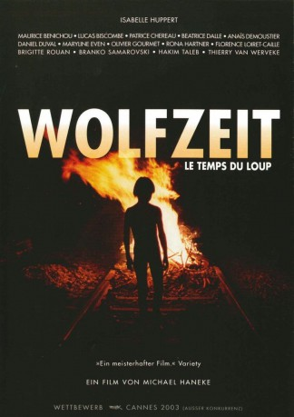
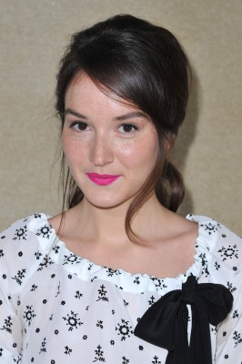
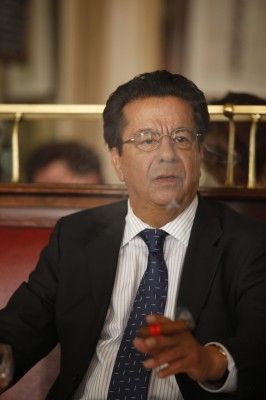
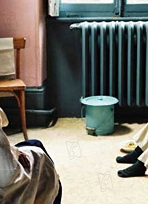
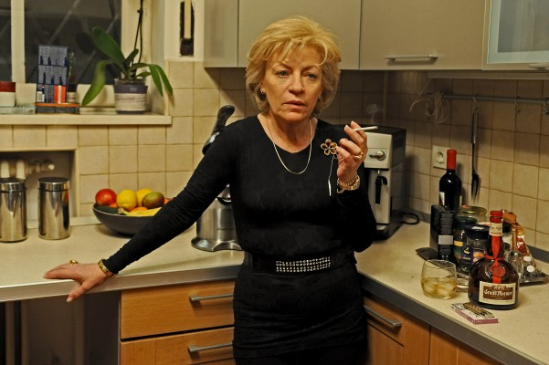

#11356 Wolfzeit
Alternativ: Time of the Wolf (Englischer Titel)
 
 IMDB-Wertung: 6.6 / 10
IMDB-Wertung: 6.6 / 10  Metascore: 71
Metascore: 71 
Als Anne und ihre Familie in ihrem Ferienhaus ankommen, finden sie Fremde darin vor. Diese Konfrontation ist nur der Beginn eines schmerzlichen Lernprozesses: nichts ist mehr, wie es war. Was als Familiengeschichte beginnt, entwickelt sich schnell zur kollektiven Tragödie. Aber es ist auch eine Legende, also die Geschichte eines Opfers und, vielleicht, die Geschichte eines Heiligen.
Jahr: 2003
Dauer: 113 Minuten
FSK: 12
Land: Frankreich Studio: Ventura FilmTonspuren:
Untertitel:
Auflösung: 1080p (1920x824) Größe: 9011 MB
Genre: Horror, Drama
Regisseur: Michael Haneke
Drehbuch: Michael Haneke
Soundtrack:
Darsteller:
 Isabelle Huppert als Anne Laurent
Isabelle Huppert als Anne Laurent-  Anaïs Demoustier als Eva Laurent
- Béatrice Dalle als
- Patrice Chéreau als
- Rona Hartner als
-  Maurice Bénichou als
 Olivier Gourmet als
Olivier Gourmet als - Florence Loiret Caille als
-  Daniel Duval als
-  Luminita Gheorghiu als
 Georg Friedrich als
Georg Friedrich als - Simon Hatzl als
 Andreas Lust als
Andreas Lust als - Marian Mitas als
- Brigitte Roüan als
- Lucas Biscombe als Ben Laurent
- Hakim Taleb als
- Serge Riaboukine als
- Maryline Even als
- Branko Samarovski als
- Thierry van Werveke als
 Michaël Abiteboul als
Michaël Abiteboul als - Pierre Berriau als
- Costel Cascaval als
- Franck Gourlat als
- François Hauteserre als
- Maria Hofstätter als
- Valérie Moreau als
- Claude Singeot als
- Ina Strnad als
- Adriana Trandafir als
- Roman Agrinz als
- Peter Bartak als
- Gabriela Bauer als
- Ileana Brancau als
- Alexander Bárta als
- Margita Huttová als
- Alexandra Höftmann als
- Silke Jandl als
- Edmund Jäger als
- Dorothea Kocsis als
- Natascha Kuliskova als
- Carmen Loley als
- Martin Nahálka als
- Klaus Ortner als
- Maria Esperanza Paraschiv als
- Petru Pecican als
- Andreas Puehringer als
- Sonja Romei als
- Christoph Theußl als
Datei: X:\2003(N-Z)\Wolfzeit (2003, FSK12, 1920x824).mkv seit 24.06.2019
Festplatte: HD 2003-2004-2005(A-F)
 Es gibt insgesamt 46 Filme in der Gruppe '2003(N-Z)'
Es gibt insgesamt 46 Filme in der Gruppe '2003(N-Z)'